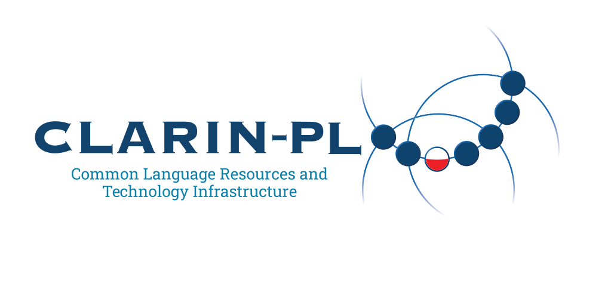
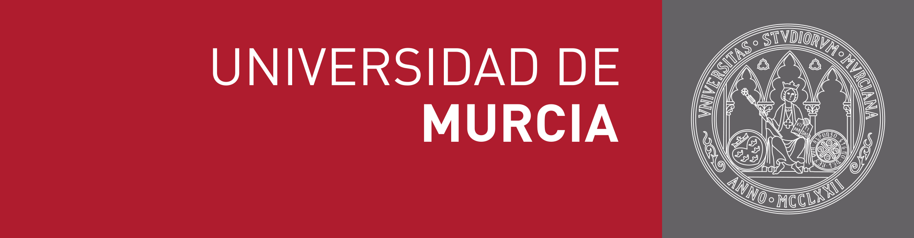

Profesionalidad
Trabajo con dedicación y rigor para entregar soluciones de calidad.
Portfolio profesional · 2021 a 2025
Construyo sistemas de NLP y agentes conversacionales para el sector público, el comercio electrónico y la formación técnica.
Desplázate
Mi pasión es resolver problemas reales mediante tecnologías de Inteligencia Artificial, compartiendo conocimiento y manteniendo siempre un enfoque profesional.
David Flórez Mazuera
Trabajo con dedicación y rigor para entregar soluciones de calidad.
No me centro en las tecnologías, sino en resolver problemas eficazmente.
Disfruto compartiendo conocimiento y comunicando de forma clara y efectiva.
Del diseño de experiencias narrativas al NLP aplicado en empresas y a la administración pública: cada proyecto resuelve un problema concreto.
Plataforma web interactiva que transformaba fotografías en experiencias narrativas inmersivas.
Implementación de soluciones NLP para clasificación de escrituras antiguas.

Sistema innovador de correlación audio-imagen mediante redes convolucionales.
Sistema de reconocimiento de tickets basado en Transformers.
Sistema híbrido de búsqueda inteligente para el Ayuntamiento de Pamplona.
Agente conversacional para e-commerce que potencia ventas y optimiza la atención al cliente.
Capacitación al personal del Ayuntamiento de Madrid en IA Generativa.
Formación especializada en implementación estratégica de IA para transformación empresarial.

Especialista en Inteligencia Artificial con enfoque en Procesamiento de Lenguaje Natural y Agentes.
Tecnologías¿Estas interesado en colaborar en un proyecto o tienes alguna pregunta? Contáctame.
¡Hola! Soy David Florez Mazuera